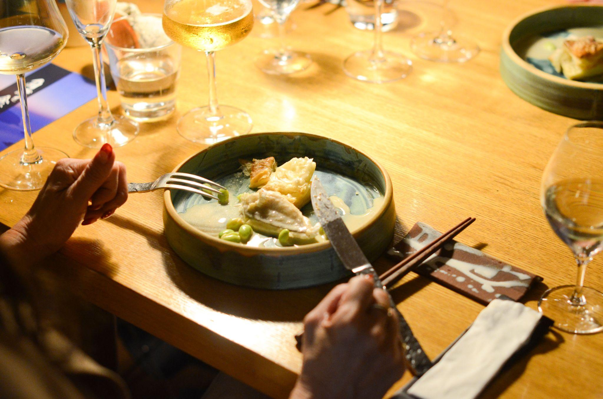

ABOUT / Our Story
Discover a place
through its food.
Behind every dish lies a place, and the people who shape it.
SHIZEN WO SHOKUSU brings producers, chefs and guests together to discover the daily life and culture of a place through food.
Through shared meals and the stories we preserve, we hope to carry those encounters and moments of wonder into the next generation.

FROM THE TABLE